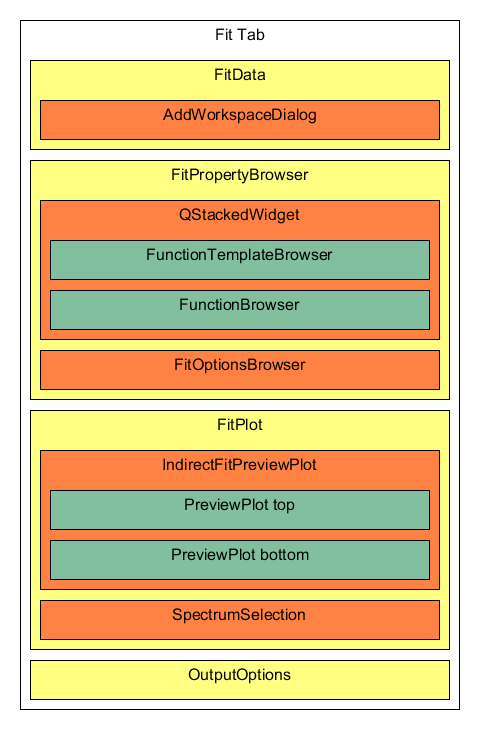
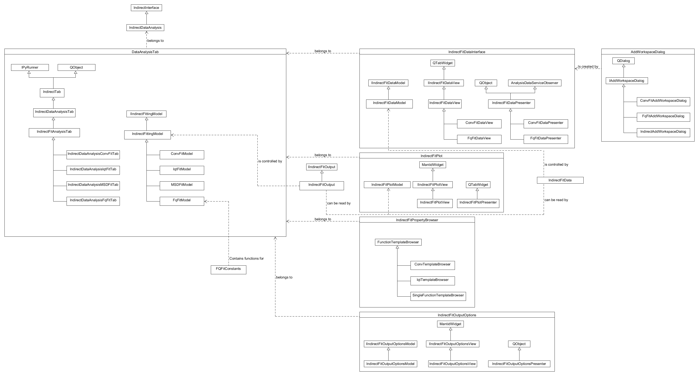

IndirectDataAnalysis File Structure#
The many levels of inheritance in the indirect data analysis codebase can be confusing. it is not always clear how they all interact.
The Elwin and I(Q,t) are the most different as their components are all contained within a single UI file. This is something that should be fixed to be more modular but it could be left till the fit tabs are separated out entirely.
Fit Tab structure#
The QENS fit tabs in Inelastic Data analysis have this general structure. Different tabs will feature different derived classes for the IndirectDataAnalysisTab, FitDataView, FunctionTemplateBrowser, and the AddWorkspaceDialog
{kind=link}

QENS Fit class structure#
{kind=link}

The ideal structure for the interface should include MVP for each defined section. As part of the refactoring of the old IndirectFittingModel has been broken up, the IndirectFitData and IndirectFitPlot all previously used the same instance of the fitting model, now communication is handled with signals through the presenters and they each have their own. Some objects are shared between models, but as a design rule only one object should ever make changes to it e.g. the IndirectFitData is controlled by IndirectFitDataModel, but is sometimes read by IndirectFitPlot.
The IndirectFitPlotModel also contains a pointer to the active fit function and the IndirectFitOutput from the IndirectFittingModel, again should only ever READ FROM THESE OBJECTS only the IndirectFittingModel should control it.
IndirectDataAnalysisTab#
The IndirectDataAnalysisTab is the master container for each IDA tab, contained in this are the individual tabs IndirectFittingModel and View, as well as the sub widgets that make up the interface. Each Tab contains: - an IndirectFitDataInterface that manages the input of data to the tab - an IndirectFitPlot that contains two mini-plots: one for the data, and one for the fit difference. - an IndirectFitPropertyBrowser that contains the processes for manipulating the fit function and fit methods. - an IndirectFitOutputOptions that contains methods of producing plots of fitted data.
IndirectFittingModel#
The fitting function for the interface is run from the IndirectFittingModel, the fitting model controls an IndirectFitOutput, this object contains data from fits run through the model so that the results can then be read by the IndirectFitPlotModel to be used in the mini-plot. The IndirectFittingModel also contains specifics for the functions that can be utilized by the IndirectFitPropertyBrowser, listing the available functions and their ties.
IndirectFitDataInterface#
The IndirectFitDataInterface is the container that controls data input for the tab, it contains a table of spectra added through the AddWorkspaceDialog, some tabs require different inputs, for example, the ConvFitTab requires each data entry to have both a sample and resolution workspace. Because of this, some tabs have their version of this widget that allows for these specific additions. The data input is stored in the IndirectFitData object that can then be read by the IndirectFitPlotModel to be used in the mini-plot.
On construction, the IndirectFitDataPresenter is passed a Model (IIndirectFitDataModel) and a view (IIndirectFitDataView) these define the usage of the widget and the data to be contained within. The Presenter connects the signals when the editable entries in the view’s data table with the model that records the contents of the table in the IndirectFitData container. The presenter also contains the command for creating the AddWorkspaceDialog object which is overwritten when a different version is needed (e.g. ConvFitDataPresenter creates ConvfitAddWorkspaceDialogue) the presenter then connects signals from the dialogue for data being added. Different versions of the presenter utilize a different form of the addTableEntry function to use their unique layouts for their data and store the relevant data through the model. The IndirectFitDataModel is identical for all tabs and contains the functionality required for all even if some parts are not required such as the resolution in ConvFit. The model contains functions for manipulating the contents of IndirectFitData (m_fittingData) and recalling information from it to be passed to the FittingModel. The contents of the model can be queried using either the FitDomainIndex (the position of a workspace-spectra on the data table) or with WorkspaceID (the position of a workspace in m_fittingData) and WorkspaceIndex (the WorkspaceIndex of spectra within the workspace)
IndirectFitPlot#
The IndirectFitPlot is the container that controls the miniplots within the tab, this consists of two miniplot frames. One to contains the selected spectra, the guess for the fit function if selected, and the fitted function if ran. and the second to contain the fit difference once the tab has been run. this widget also contains the controls for which spectra should be plotted.
IndirectFitPropertyBrowser#
The IndirectFitPropertyBrowser is the container that controls the fitting function to be used within the tab. These each has their own sets of functions that are stored within the TemplateBrowser, the TemplateBrowser is a simplified version of the normal Mantid fit property browser that contains only the factors relevant to the processes used in the tab. the contents of this Browser are given to the FittingModel to be processed.
IndirectFitOutputOptions#
The IndirectFitOutputOptions contains a set of controls that allow for the output of fits from the interface to be plotted separately, including plotting fit parameters from simultaneous or sequential fits.
IndirectFitData#
The IndirectFitData container serves as a storage container for the data contained within the IndirectFitDataInterface, it allows for data to be communicated between the plot and the data input without extraneous signals. By design, the only thing that should manipulate to contents of IndirectFitData is the IndirectFitDataInterface. IndirectFitPlot should only ever read the contents of IndirectFitData.
IndirectFitOutput#
The IndirectFitData container serves as a storage container for the output of fits from the tabs, it allows for data to be communicated between the plot and the FittingModel without extraneous signals. By design, the only thing that should manipulate to contents of IndirectFitOutput is the IndirectFittingModel. IndirectFitPlot should only ever read the contents of IndirectFitOutput.